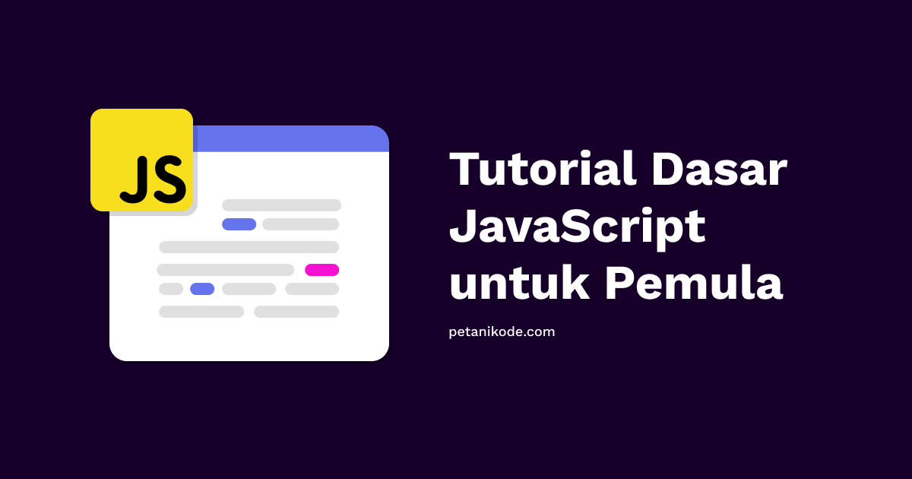

Belajar JavaScript untuk Pemula
JavaScript adalah bahasa pemrograman yang sangat populer dan digunakan secara luas dalam pengembangan web. Bagi pemula, memulai belajar JavaScript bisa terasa membingungkan, namun dengan pendekatan yang tepat, kamu akan cepat memahaminya.
Langkah awal belajar JavaScript adalah memahami dasar-dasar seperti variabel, tipe data, operator, percabangan, dan perulangan. Setelah itu, lanjutkan ke fungsi, DOM (Document Object Model), dan event handling. Banyak sumber gratis tersedia seperti Mozilla Developer Network (MDN), freeCodeCamp, dan W3Schools.
Praktik adalah kunci utama. Cobalah membuat proyek kecil seperti kalkulator, daftar tugas (to-do list), atau game sederhana untuk mengasah kemampuanmu. Jangan lupa gunakan browser console untuk eksperimen kecil dan debugging. Terus belajar dan jangan takut gagal!